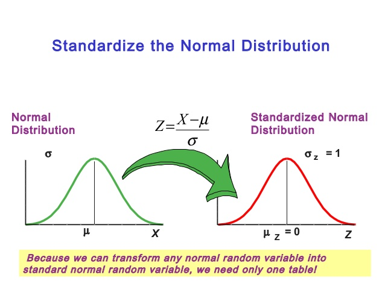

STAT 360 - Lecture 13
Uniform Distribution
Let a continuous random variable $X$ assume values only in a bounded interval $(a,b)$ and that its pdf is constant $f(x)=c$, then
$$1 = \int_a^b c dx = c(b - a) \Rightarrow c = \frac{1}{b-a}$$
So we have that:
$$f(x; a, b) = \begin{cases} \frac{1}{b-a} & a < x < b,\\ 0 & \mathrm{ otherwise.} \end{cases} $$
is the pdf of $X \sim$ UNIF$(a,b)$. The CDF is as follows,
$$F(x; a, b) = \begin{cases} 0 & x \leq a,\\ \frac{x - a}{b - a} & a < x < b,\\ 1 & b \leq x. \end{cases} $$
Uniform Expectation and Variance
It is simple to show that $E(X) = \frac{a+b}{2}$ and that
$Var(X) = \frac{(b-a)^2}{12}$
HW 4 Problem 1: Prove the above expectation and variance for $X \sim$ UNIF$(a,b)$.
Example
Normal Distribution
The normal distribution was first published by Moivre in 1733 as an approximation to the distribution of the sum of binomial random variables.
However, at the time Moivre lacked the concept of the pdf and what he published was nothing more than an approximation rule. It was in 1809 that Gauss formalized the normal distribution as a way to explain the method of least squares.
As such, the normal distribution is also know as the Gaussian distribution.
Normal Distribution
If $X$ is a normal random variable with mean $\mu$ and variance $\sigma^2$, then $X \sim N(\mu, \sigma^2)$ and its pdf is described by:
$$f(x; \mu, \sigma^2) = \frac{1}{\sqrt{2\pi}\sigma}e^{-\frac{1}{2\sigma^2}(x-\mu)^2}$$
where $-\infty < x < \infty$.
Properties of the Normal Curve
- The mode, which is the $\max_{x} f(x; \mu, \sigma^2)$, occurs at $x = \mu$.
- The curve is symmetric about the vertical axis throught the mean $\mu$.
- The normal curve is concave down in the interval $(\mu -\sigma, \mu + \sigma)$, and up elsewhere.
- The normal curce has a horizontal asymptote at $y=0$.
- The total area under the curve and above the horizontal axis is equal to 1.
Note that by construction $E(X) = \mu$ and $Var(X) = \sigma^2$.
The Normal distribution is the most important distribution when it comes to practical applications.
Various physical phenomena express exact normality; the Normal distribution can approximate probabilities for Binomial and Poisson r.v.'s; the errors in regression analysis follow a Normal distribution.
Standardizing
If $X \sim N(\mu, \sigma^2)$, then $Z = \frac{X - \mu}{\sigma} \sim N(0,1)$.
Normal CDF
The normal CDF can be obtained in the usual way and expressed as a linear combination of the Gauss error function:
$$F(x) = \Phi \left(\frac{x-\mu}{\sigma}\right)=\frac{1}{2}\left[1 + erf\left(\frac{x-\mu}{\sigma \sqrt{2}}\right)\right],$$
where $erf(x) = \frac{2}{\sqrt{\pi}}\int_0^xe^{-t^2}dt$.